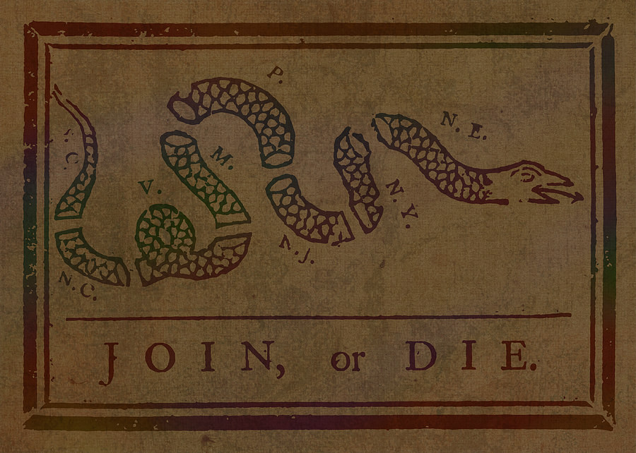

Join, or Die.
Converting an Organization to Drupal
Chattanooga State Community College
Presented at Drupal Camp Chattanooga 2018
Charles Fannin
Web Developer, Web Applications Technology
charles.fannin@chattanoogastate.edu
(423) 697-5522
http://tiny.cc/panicfcf (slides)
History/Background
Web Presence at Chattanooga State
- Circa 1990 - Early 2000s - FrontPage / Site hosted on Microsoft Infrastructure (IIS)
Microsoft
History/Background
Web Presence at Chattanooga State
- 2009: Omniupdate CMS / Linux Hosting On-site
- Other subsites on various platforms (Linux/Microsoft)
Microsoft
History/Background
Web Presence at Chattanooga State
- 2013 to Present: Migration to Drupal CMS / Pantheon Hosting Off-site
- Other sites hosted mostly on Linux in Drupal CMS, on-site
Why Change?
Microsoft
Wide Range of Products/Technologies
- Web Calendar - Bedework, then Wordpress
- OmniUpdate - enterprise CMS
- Hard-coded sites
- Custom CMS for athletic roster, catalog management, and schedule management
Road to Drupal
- 2013: OmniUpdate expensive and contract up for renewal!
- Enter Open Source
- The Contenders: Joomla, Wordpress, Drupal
The Contenders
The Winner: Drupal (Why?)
- Security
- Community Support
- Flexibility
- Cost Effective
Researching Drupal

Meeting the Community
IT Level-up
Selling Drupal
Selling to Marketing
Selling Points
Selling Points (continued)

Selling to IT Services
How did we do it?
The Nuts and Bolts of Converting to Drupal
The Voice of Experience
The Voice of Experience (continued)
Time to Build It (or lack of time)